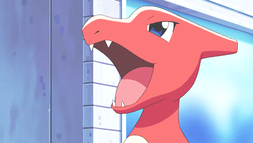
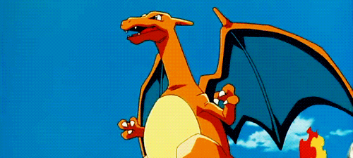

Charmander, conhecido como Hitokage (ヒトカゲ?) no Japão, é um espécie de pokémon da franquia Pokémon da Nintendo e da Game Freak.
Criado por Atsuko Nishida,[1] Charmander apareceu pela primeira vez no videogame Pokémon Red e Blue e subsequentes,
mais tarde aparecendo em vários jogos da franquia. O fim da cauda de um Charmander é aceso com uma chama,
a chama muda de tamanho conforme sua saúde física e as emoções do personagem.[2] Charmander evolui para Charmeleon e, em seguida, para Charizard.
>

Ele é a forma evoluida de Charmander quando chega no nivel 16 e depois evolui para Charizard quando chega no nivel 36.
Charmeleon é um Pokérmon reptiliano. Ele tem escamas vermelhas na sua parte inferior. Existe um chifre na parte de trás da cabeça.
Ele tem olhos verdes e um focinho comprido. Tem braços relativamente longos com três garras afiadas. Suas pernas curtas têm pés com três garras.
A ponta de sua cauda longa, poderosa tem uma chama acesa sobre ele.

Charizard (em japonês: リザードン Lizardon) é um Pokémon do tipo Fogo e Voador.
Ele é a forma evoluída de Charmeleon quando chega no nível 36. Ele tambem é a forma final de Charmander.
Ao contrário de suas pré-evoluções, tem asas que lhe permite voar, é um pokemon muito parecido com um dragão. Como suas formas anteriores,
é bípede e tem uma longa cauda com uma chama que só se apaga quando ele morre. Tem três garras extremamente afiadas, dígitos distintos, um longo pescoço, e dois chifres salientes na parte de trás de sua cabeça.
A frente de suas duas asas é azul-petróleo, enquanto a traseira é laranja como a maior parte de seu corpo. Embora pouco visível, a iris de Charizard é azul de cor clara. Sua barriga e parte inferior das patas são de cor creme.
Mega Charizard Y.
Como mega Charizard X, sua pele fica preta com um lado azul da mandíbula inferior até a ponta da cauda. Ele ganha duas curvas, pontos azuis em cada ombro e as pontas de seus chifres ficar azul também. Agora, há dois pontos curvados na parte de trás do seu pescoço.
As bordas das suas asas são divididos em seções grandes, arredondadas e da articulação tem um pico curvado sobre ele. Mega Charizard X respira chamas azuis os lados de sua boca, e a chama em sua cauda agora queima azul com o aumento do calor também.